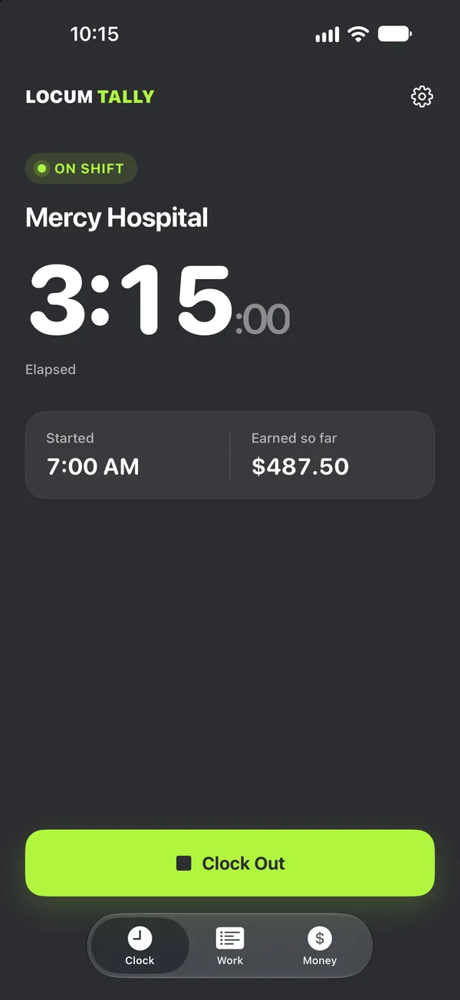
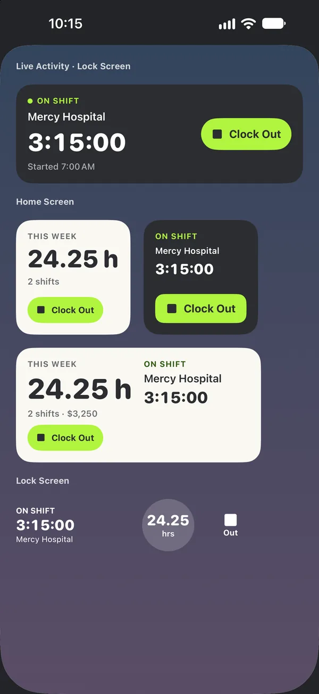
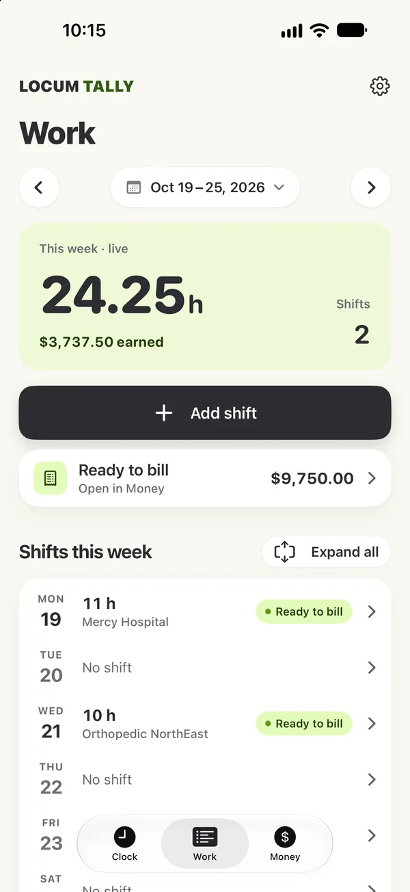
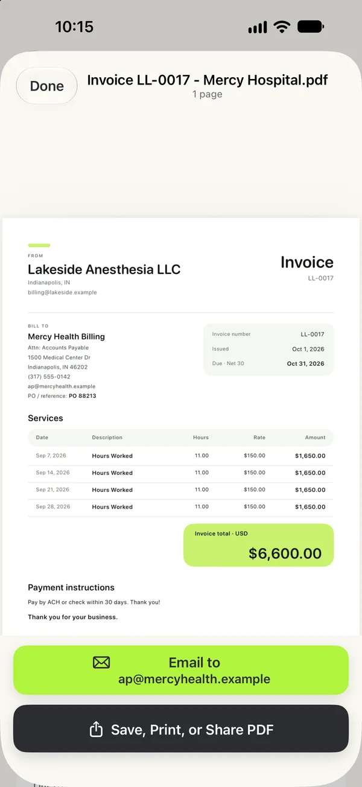
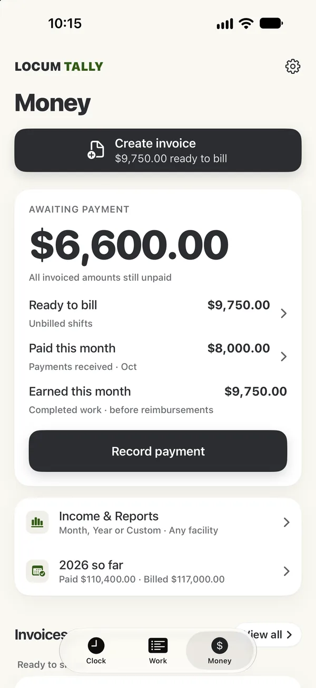
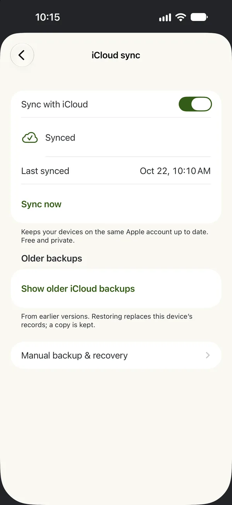

For 1099 locum providers
The time clock & invoice app for locum providers
Clock in with one tap. Turn finished shifts into a clean PDF invoice and email it to the facility before you get to your car.
Free to start · Pro has a 2-week free trial
- No account
- No ads
- No tracking
- Built for iPhone

How it works
From clock-in to invoice in three steps
Clock every shift
One tap in the app, on the Lock Screen or with Siri. Forgot? Add the shift by hand.

See what's ready to bill
Work shows each week's hours and the shifts you haven't invoiced yet.

Email the invoice
Create a PDF from the unbilled shifts and send it to the facility's billing contact.
Features
Built around facilities, shifts and the way locums actually get paid
General hour trackers don't know about call stipends or premium hours. Generic invoice apps don't know when you clocked in. Locum Tally does both.
Pay rules that match your contract
Set them once per facility. Every shift is priced the same way your contract says.
- Hourly rate, plus a premium rate after a set number of hours in a shift
- Weekend and holiday day rates
- Call pay: a stipend (by day if needed) or hourly, plus called-in time
- Guaranteed hours per shift and unpaid breaks
- Billing increments: actual minutes, or 6, 15 or 30 minutes, up or nearest
- Payment terms per facility, such as Net 30
Example Surgery Center Sample
- Hourly rate
- $175/h
- Premium
- $250/h after 10 h
- Weekend & holiday
- Own day rates
- Call
- $500 stipend + called-in time
- Guaranteed
- 8 h per shift
- Rounding
- 15 min, round up
- Payment due
- Net 30
Invoices the billing office can pay
Pick a facility, select its unbilled shifts, review, done.
- Clean PDF with your business details, the facility's Bill To contact and PO number
- Each shift with its date, hours, rate and amount
- Add expenses and receipt photos
- Email it from the app, or save, print or share the PDF

Know who still owes you
Money shows what's awaiting payment, ready to bill and paid this month.
- Record full or partial payments and see what's past due
- Optional reminders for billing days and past-due invoices
- Year to date: paid, billed, work completed and expenses
- Income reports by month, year or custom range as a PDF
- Pro: QuickBooks Online CSV, QuickBooks Desktop (IIF), Excel CSV and an accountant package

Private by design
Your income is nobody else's business.
- No account to create, no ads, no analytics, no tracking
- Records stay on your iPhone and sync through your own private iCloud, free on every plan
- Backup and restore through the Files app
- App Store privacy label: Data Not Collected
- Your records are yours alone. Locum Tally doesn't keep a copy of your data, so we can't recover anything once you delete it. Turn on iCloud sync and save backups regularly to protect your records.

Who it's for
For clinicians who bill facilities directly
If you get a 1099 instead of a W-2 and send your own invoices, Locum Tally was made for you.
- CRNAs & anesthesia providers
- Locum physicians
- Nurse practitioners
- Physician assistants
- Per diem clinicians
- Other 1099 contractors who bill by the shift or hour
Pricing
Free to start. Pro when you need more facilities.
Free
$0
Free forever
- Time clock, widgets, Live Activities and Siri
- 1 active facility
- 1 invoice per calendar month
- PDF income report
- iCloud sync and backups
- Your existing records are never locked
Locum Tally Pro 2 weeks free
$9.99 / month
or $79.99 / year
- Unlimited facilities and invoices
- QuickBooks and CSV exports
- Receipt scanning with the camera
- 2-week free trial for eligible new subscribers, then renews automatically. Cancel anytime in your Apple Account settings.
US prices. Your price is shown in the App Store before you buy. See the Terms of Use.
Why it exists
"I'm an anesthesia provider, and I couldn't find one easy-to-use app that tracked my time, generated invoices, and kept my income organized. So I built it."
Founder of Locum Tally, an anesthesia provider in Indiana
Free tools
Free tools for 1099 clinicians
Make an invoice, grab a template or check a rate in your browser. Free, no sign-up, and nothing you type leaves your browser.
Guides
Free guides for 1099 providers
On Android?
Want Locum Tally for Android?
Locum Tally is iPhone-only today. Join the waitlist and we'll email you if an Android version launches. Your email is only used for this.
FAQ
Questions, answered
How much does Locum Tally cost?
Locum Tally is free to download. The free plan includes the time clock, widgets, Live Activities, Siri, iCloud sync, the PDF income report, 1 active facility and 1 invoice per calendar month. Locum Tally Pro is $9.99 a month or $79.99 a year in the US, with a 2-week free trial for eligible new subscribers. Your price is shown in the App Store before you buy.
Who is Locum Tally for?
It's built for 1099 locum providers who bill facilities directly: CRNAs and other anesthesia providers, locum physicians, nurse practitioners, PAs and other independent clinicians. Any independent contractor who bills clients by the shift or by the hour can use it. A "facility" is simply the client you bill.
Can it handle call pay, premium hours and billing increments?
Yes. Each facility has its own hourly rate, an optional premium rate after a set number of hours in a shift, weekend and holiday rates, call pay (a stipend, by day if you like, or hourly, plus called-in time), guaranteed hours per shift, and time rounding: actual minutes or 6, 15 or 30 minutes, rounded up or to the nearest. Unpaid breaks come off before rounding.
Can I email invoices from the app?
Yes. Pick a facility, choose its unbilled shifts and create a PDF invoice with your business details, the facility's Bill To contact and PO number. Email it to the billing contact from the app, or save, print or share the PDF. You can add expenses and receipt photos to an invoice.
Does Locum Tally work with QuickBooks?
With Pro you can export invoices as a QuickBooks Online CSV or a QuickBooks Desktop (IIF) file, plus an Excel-ready CSV and an accountant package. Find them in Settings → Accounting. There is no live QuickBooks sync.
Do I need an account? Where is my data stored?
No account is needed. Your records stay on your iPhone and, if you turn it on, sync through your own private iCloud. There are no ads, no analytics and no tracking, and the developer can't see your data. The App Store privacy label is "Data Not Collected."
Can I clock in from the Lock Screen?
Yes. While you're clocked in, a Live Activity shows on the Lock Screen and in the Dynamic Island with a Clock Out button. There are Home Screen and Lock Screen widgets, and Siri phrases such as "Clock in with Locum Tally."
Is there an Android or web version?
Not yet. Locum Tally is an iPhone app and needs iOS 17 or later. If you'd use an Android version, join the Android waitlist and we'll let you know if it launches.
Does Locum Tally give tax advice?
No. It's a record-keeping tool. Check your taxes, invoices and contracts with a qualified professional.
More answers on the support page, or email support@locumtally.app.
Stop losing billable hours to paperwork
Download Locum Tally free and clock your next shift in one tap.